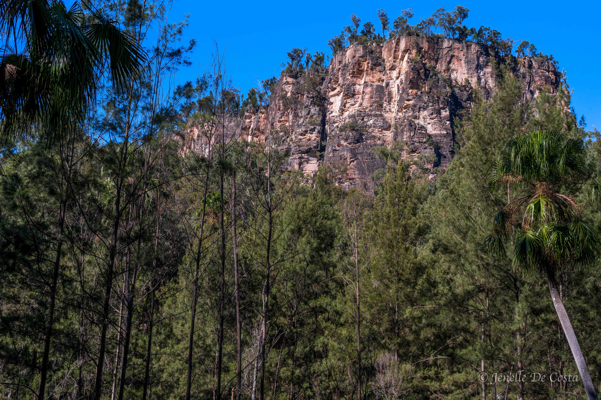
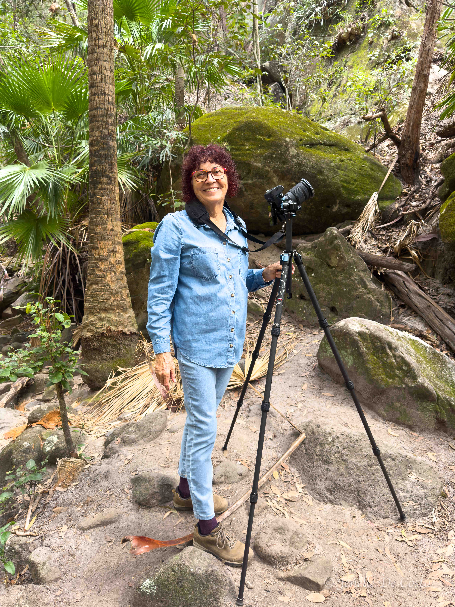
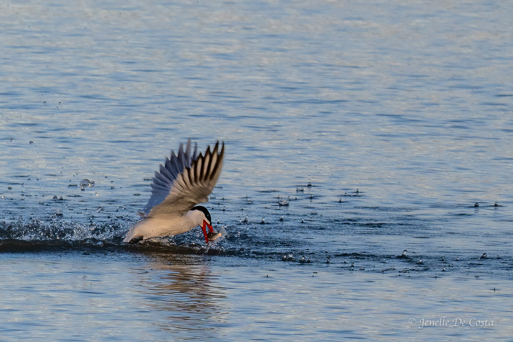
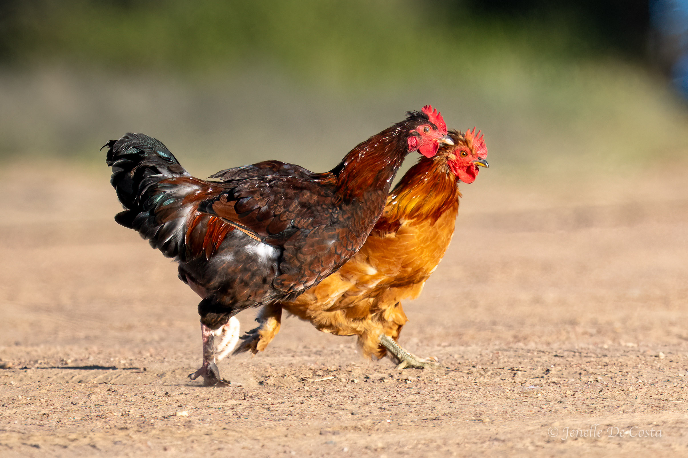

Here we go, here we go, here we go. Off around Australia anit-clockwise. Out through western
Queensland. Up through the
Northern Territory. Down the west coast of Western Australia. We think it will take us about
4 months...
04-06-2025

Carnorvon Gorge Day 1
We've booked a site at the caravan park for 3 nigths. It is about 350km from Roma to the Gorge. Along the way we stopped
and had a walk around Injune. After Injune Jenelle drove the motorhome. Her first time driving on the open road. She
soon settled into the driving seat. With trip ahead of us we will need two drivers to cover the distances safely.
05-06-2025

Carnarvon Gorge Day 2
We will call it day 2 but it was our third day at the National Park. The second day was spent recovering from
the adventures of day 1. This morning we took a shorter 6km return hike up into the Mickey Creek Gorge.
07-06-2025

Lake Maraboon - Emerald
Two nights at Lake Maraboon to catch up on shopping, washing and photo wrangling. Jenelle spent the late afternoons each day at the lake shore photographing the many species of water birds.
08-05-2025

Longreach
Our caravan park for the night was in the bush on the outskirts of town, on the banks of the Thompson River. The bird
life was teeming. The Longreach post could be sub-titled "The Birds of Longreach"